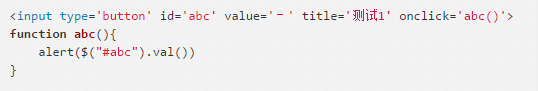

发布时间：2017-05-25编辑：EvanChuan阅读（20）
报错 abc is undefind

成功；
说明：在$(document).ready(function(){})中不能调用，但是将方法写在外面即可调用。原因很简单。因为当你把abc写在那个作为ready的参数的匿名函数里的时候，abc这个变量的作用域也仅限于那个匿名函数里。那个匿名函数之外自然无法使用 abc 这个变量。